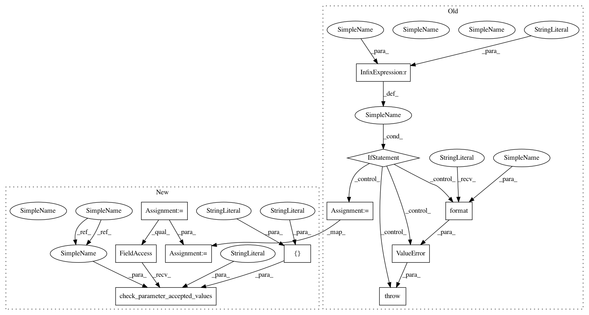

1c21df6eea15d8da0cd7ea1b82ab24869eb83f48,geomstats/geometry/product_riemannian_metric.py,ProductRiemannianMetric,log,#ProductRiemannianMetric#Any#Any#Any#,238
Before Change
logs = gs.concatenate(logs, axis=1)
return logs
if point_type == "matrix":
point = gs.to_ndarray(point, to_ndim=2, axis=0)
point = gs.to_ndarray(point, to_ndim=3, axis=0)
base_point = gs.to_ndarray(base_point, to_ndim=2, axis=0)
base_point = gs.to_ndarray(base_point, to_ndim=3, axis=0)
logs = gs.stack(
[self.metrics[i].log(point[:, i], base_point[:, i])
for i in range(self.n_metrics)], axis=1)
return logs
raise ValueError("invalid point_type argument: {}, expected "
"either matrix of vector".format(point_type))
After Change
if point_type is None:
point_type = self.default_point_type
geomstats.errors.check_parameter_accepted_values(
point_type, "point_type", ["vector", "matrix"])
if point_type == "vector":
point = gs.to_ndarray(point, to_ndim=2)
base_point = gs.to_ndarray(base_point, to_ndim=2)
intrinsic = self.is_intrinsic(base_point)
args = {"point": point, "base_point": base_point}
logs = self._iterate_over_metrics("log", args, intrinsic)
logs = gs.concatenate(logs, axis=1)
return logs
point = gs.to_ndarray(point, to_ndim=2, axis=0)
point = gs.to_ndarray(point, to_ndim=3, axis=0)
base_point = gs.to_ndarray(base_point, to_ndim=2, axis=0)
base_point = gs.to_ndarray(base_point, to_ndim=3, axis=0)
logs = gs.stack(
In pattern: SUPERPATTERN
Frequency: 3
Non-data size: 11
Instances
Project Name: geomstats/geomstats
Commit Name: 1c21df6eea15d8da0cd7ea1b82ab24869eb83f48
Time: 2020-04-30
Author: nicolas.guigui@inria.fr
File Name: geomstats/geometry/product_riemannian_metric.py
Class Name: ProductRiemannianMetric
Method Name: log
Project Name: geomstats/geomstats
Commit Name: b916facabed1e9a637bf23d16e773145d4777dde
Time: 2020-04-30
Author: nicolas.guigui@inria.fr
File Name: geomstats/geometry/product_riemannian_metric.py
Class Name: ProductRiemannianMetric
Method Name: exp
Project Name: geomstats/geomstats
Commit Name: 1c21df6eea15d8da0cd7ea1b82ab24869eb83f48
Time: 2020-04-30
Author: nicolas.guigui@inria.fr
File Name: geomstats/geometry/product_riemannian_metric.py
Class Name: ProductRiemannianMetric
Method Name: inner_product
Project Name: geomstats/geomstats
Commit Name: 1c21df6eea15d8da0cd7ea1b82ab24869eb83f48
Time: 2020-04-30
Author: nicolas.guigui@inria.fr
File Name: geomstats/geometry/product_riemannian_metric.py
Class Name: ProductRiemannianMetric
Method Name: log